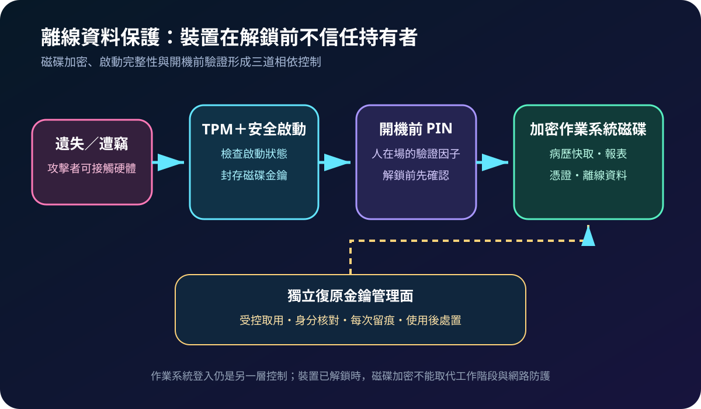
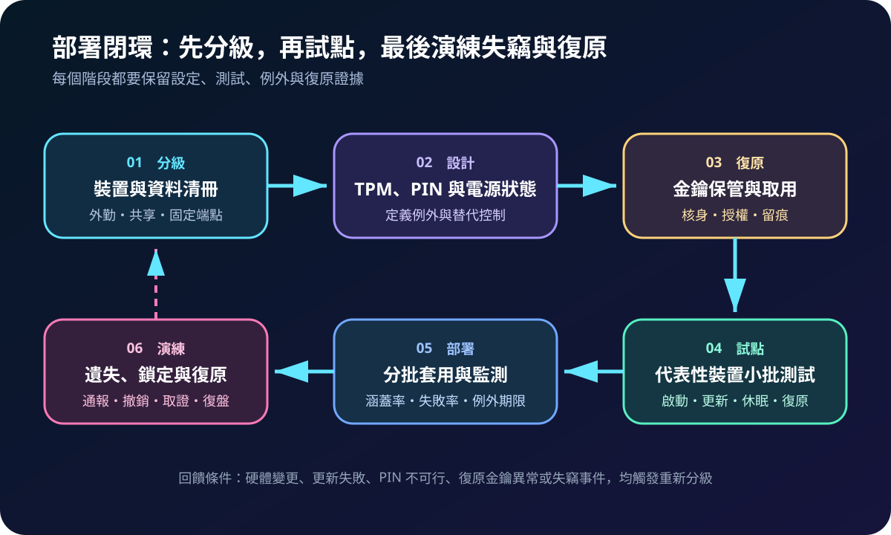
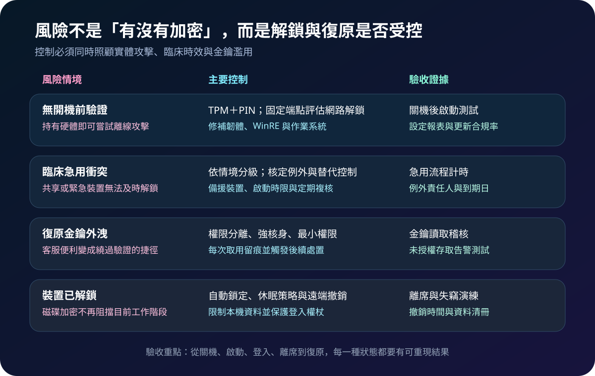

醫療資安國際觀察 · 2026-09-06
醫療可攜端點遺失時如何保住資料：從開機前驗證到復原金鑰
作者：Dr. William｜醫療資訊與資安治理實務工作者
筆電、行動工作站或外勤裝置離開受控場域後，登入密碼不能單獨防止拆碟與離線存取。離線資料保護需要把磁碟加密、啟動完整性、開機前驗證與復原金鑰治理設計成同一條控制鏈。
名詞解釋：TPM、開機前 PIN 與復原金鑰
全磁碟加密限制未授權者讀取關機裝置中的資料。可信平台模組（TPM）可將金鑰與裝置啟動狀態綁定；開機前 PIN要求使用者在作業系統解鎖前提供另一項驗證。復原金鑰用於硬體、韌體或保護設定改變時恢復存取，但若保管與取用失控，也可能成為繞過正常驗證的高價值秘密。
國際現況與適用邊界
英國 NCSC 於 2026 年 8 月說明，Windows Recovery Environment 的弱點可能繞過部分未要求 PIN 的 BitLocker 設定，並建議以開機前 PIN 降低此類風險；無法使用 PIN 時，可依場景評估 Network Unlock 或 TPM 搭配啟動金鑰。Microsoft 的 BitLocker 文件說明，TPM、安全啟動、開機前驗證及復原機制各自處理不同風險。NIST SP 800-111 則提供終端裝置儲存加密的選擇、部署與管理基礎。
法域與效力：NCSC 建議適用英國組織風險管理，Microsoft 文件描述特定產品能力，NIST 文件屬美國技術指引；均不是台灣醫院的法定設定值。台灣醫療機構可採用其分層保護與驗收方法，實際配置仍須依本地規範、設備支援、臨床時效、醫院政策及風險核定。
規劃：依裝置情境決定保護強度
範圍應區分外勤筆電、醫師行動裝置、共享工作站、固定診間端點及緊急用途設備，記錄本機資料、登入憑證、電源狀態、硬體支援與責任人。角色至少涵蓋端點維運、資安、身分管理、服務台、臨床使用單位與隱私權責。驗收指標可採加密涵蓋率、TPM 與安全啟動合規率、開機前驗證涵蓋率、例外到期數、金鑰取用異常數、遺失通報至撤銷時間及復原成功率。

實作：把解鎖、例外與復原分開管理
- 建立清冊：比對裝置管理平台、加密狀態與資料分類，找出未加密、暫停保護及未上傳金鑰的端點。
- 設定啟動保護：啟用 TPM、安全啟動與磁碟加密；外攜高風險裝置優先測試開機前 PIN，並維持韌體、復原環境及作業系統更新。
- 處理臨床例外：對急用或共享裝置量測啟動時限；PIN 不可行時，記錄理由，評估網路解鎖、啟動金鑰、固定場域、資料最小化與替代設備。
- 隔離復原金鑰：限制可查閱人員，強化核身與雙人覆核，記錄裝置、原因、核准者與取用時間，並監測大量或異常讀取。
- 演練完整狀態：測試關機、休眠、更新、硬體變更、遺失通報、帳號與權杖撤銷、金鑰復原及事件後複核。
風險：加密標示正常不等於資料全程安全
只看「已加密」狀態，可能忽略自動解鎖、保護暫停、未修補復原環境與外洩金鑰；把同一 PIN 配給多人，則會削弱可歸責性。裝置若在遺失時仍保持登入或睡眠狀態，磁碟加密也不能取代自動鎖定、休眠策略、工作階段保護與遠端撤銷。臨床急用例外若沒有期限與備援，又會永久擴大曝險。

可執行清單
- 外攜與含敏感資料的端點是否已逐台確認加密及啟動保護？
- 開機前 PIN 的適用範圍是否依實體風險與臨床時效分級？
- 不能使用 PIN 的設備是否有替代控制、核准者與到期日？
- 復原金鑰是否集中保管、最小授權並完整記錄每次查閱？
- 遺失裝置時是否能及時撤銷帳號、憑證、權杖與遠端存取？
- 是否實測關機後攻擊面、硬體變更復原與急用啟動時間？
來源
- UK NCSC｜How BitLocker PINs help protect your data and devices（發布：2026-08-13；查閱：2026-09-06）
- Microsoft Learn｜BitLocker overview（更新：2026-08-24；查閱：2026-09-06）
- NIST｜SP 800-111, Guide to Storage Encryption Technologies for End User Devices（發布：2007-11；查閱：2026-09-06）
內容說明
本文依健康台灣深耕計畫相關治理內容整理，並參考 NCSC、Microsoft 與 NIST 公開資料，提出台灣醫療機構可採用的端點加密、開機前驗證與復原金鑰治理框架；不取代主管機關公告、法律意見、產品安全通知、醫療設備認證或個案臨床決策。